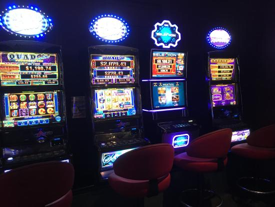
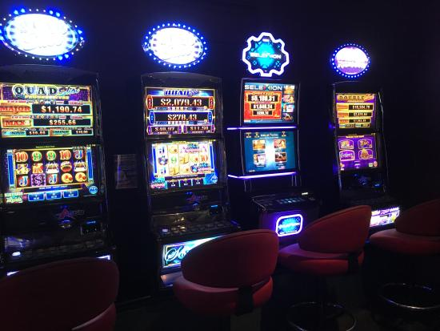

This motel is situated down the main road of Morrinsville just outside of the shopping district in the recently converted farm land. It can be reached from the main roundabout that connects the main roads Studholme St and Thames St up past Warehouse.
we are a hotel targeting the development of morrinsville as a tourist location.

This giant cow is located on the main road heading into town
after heading straight you take the first exit on the first roundabout onto studholme street
This cow is located at greanleas on studholme street
following the road into town and continuing straight you pass the hotel